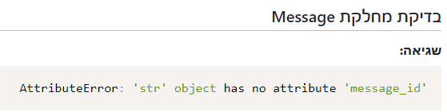

מדובר על המשתנה של מהירות האור? כי קרה לי אותו דבר עכשיו…
האם פונקצית send_message שלך מוגדרת לדרוש משתנה ‘check_if_read’?
אם כן, אז המשתנה הזה לא צריך להיות שם. (רמז: אם הודעה נשלחת כרגע, האם היא נקראה או לא?)
לייק 1
הגבתי לך בתרגיל 
השורה החתונה - אין חובה לטסטים עובדים בצב שלוח 1+2.
מה שסוכם לגבי השגיאות מסוג זה היה להוסיף את הפרמטרים עד שיעבוד/יקפיץ שגיאה אחרת
כן, פשוט תגדיר/י ידני את הערך
לייק 1
היי אשמח לעזרה להבין ממה נובעת השגיאה שאני מקבל בחללר:
TypeError: type object argument after * must be an iterable, not int
זה אחרי שהבודק לא אהב את ההגשה הראשונה שלי והקפיץ:
TypeError: ‘<’ not supported between instances of ‘datetime.datetime’ and ‘int’
הגבתי לך בתרגיל
לייק 1
תודה רבה!
היי
קיבלתי שגיאה בתרגיל צב שלוח collection failure
הבנתי שזה קרה כבר בחללר… זה משהו שאני צריכה לתקן? אני לא כ"כ מבינה על מה השגיאה… זה קרה אחרי ששיניתי את המשתנה לכותרת ההודעה ל-subject.
אשמח לעזרה…

מישהו יכול לעזור לי?
אין לי שום str עם ה-attribute הזה…
קישור לתרגיל: https://solve.pythonic.guru/view/103758
את מנסה להפעיל על משתנה שמקבל לתוכו מחרוזת את massage-id
תכניסי שם הדפסה של הטייפ שלו לפני שאת עושה את השורה של x.massae_id ותראי מה יש בו
היי,
בתרגיל סקרנות מופיעה לי השגיאה הבאה למרות שכשאני מריצה את הקוד של הבדיקה הוא רץ ומחזיר להכל True.
{kind=link}
מישהו יודע מה כוונת הערה?
קישור לתרגיל: https://solve.pythonic.guru/view/98885
תודה רבה!
אבל אין לי בכלל message_id בקוד!
יצרת את המחלקה של Message וזהו מעולה.
מה לדעתך כדאי להחזיר ב-search_inbox, מילון או את המחלקה החדשה הסופר מגניבה שלך? 
לייק 1
אני מקבל הודעת שגיאה בבודק, ולא מצליח להפתר ממנה כבר שעות. שכתבתי חצי תרגיל 3 פעמים, וכלום לא עוזר
{kind=link}
אין לי שום סטרינג בקוד. היה אחד כזה, במקור הכנסתי את תאריך השיגור והמרתי אותו לאובייקט דייט טיים. וגם את זה הסרתי ושיניתי כדי לנסות לרצות את הבודק האוטומטי. אם הייתי מנסה לעשות פעולה בין INT ל STR, מן הסתם המחברת לא היתה מריצה לי את התרגיל. אני לא מצליח להבין מה הוא רוצה, וזה מאוד מאוד מתסכל.
https://solve.pythonic.guru/view/103512
נסי לחשוב על מקרי קצה ב-remove_option.
מה קורה אם האופציה לא קיימת? והאם הערך הנכון מוחזר?
לייק 1
האם get_distance עומד בדרישות התרגיל?
כמובן שכן… לא הייתי מעלה את התרגיל מבלי לבדוק אם הוא לא מבצע את מטרתו
לא הייתה כוונה לזלזל בך אלא להעיר את תשומת לבך לתרגיל.
הבנת הדרישות היא חלק חשוב מאוד מהעבודה (כל עבודה למעשה) ואני יכול להבין איפה נפלה הטעות. לכן, אנא קרא שוב את דרישות התרגיל למתודה זו ונסה להבין איפה הפער
ממש לא חשבתי חשבתי ככה, פשוט הבהרתי את אופן הפעולות שלי
החשיבות בהבנת דרישות התרגיל ברורה לי לחלוטין, ואני משתדל ממש להקפיד למלא אותן במדויק בכל תרגיל ותרגיל. כמובן שלפעמים אני עשוי לטעות…
אז אולי לא הבנתי פה משהו, אבל להבנתי המחלקה אמורה לקבל פרמטר של מהירות, ולצור מופע המכיל את המהירות כתכונה, ואת זמן השיגור. הפעולה get distance על המופע אמורה להחזיר את המרחק שעברה הגשושית מאז השיגור, עד הזמן הנוכחי. זה בדיוק מה שהמחלקה מבצעת. אז אולי יש משהו שלא הבנתי…
{kind=link}